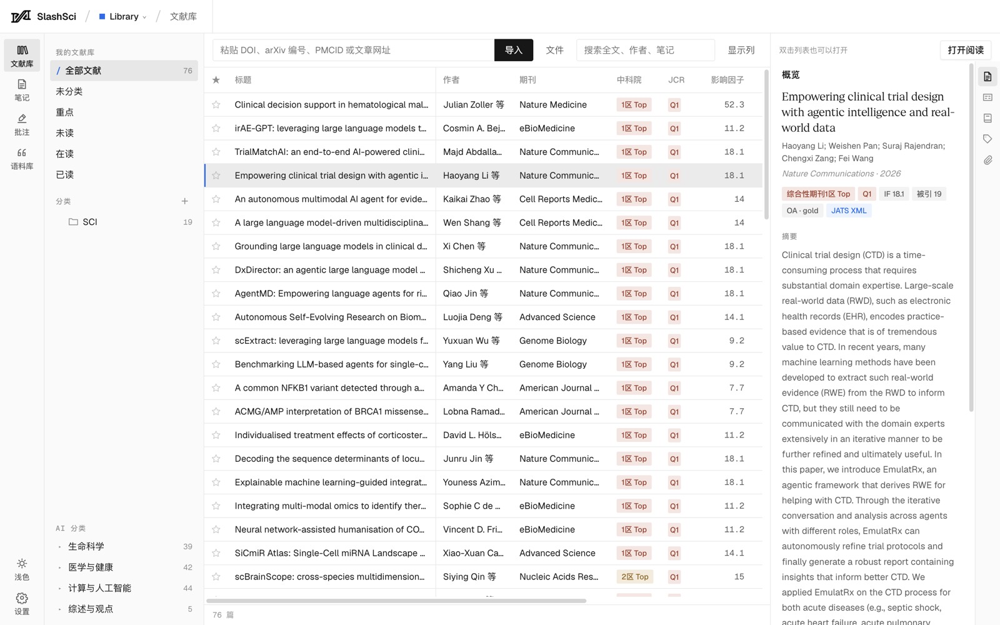

/ SlashSci
Reference management and close reading, designed for the AI era. Read papers as structured full text, with annotations, notes, translation and AI Q&A in one place. Your library always stays on your own computer.
For macOS (Apple silicon) and Windows. The beta is not code-signed; see the install notes below.


Read deeper, manage with less effort
Structured full text
Takes the publisher’s structured full text first, keeping sections, formulas, figures and references, instead of a PDF you can’t copy from. Figures can be swapped for the publisher’s high-resolution versions.
Immersive reading
Original and translation side by side; hover for key terms and references. Typesetting made for close reading, smooth even on long papers.
Annotations and notes
Highlight text, box regions of a figure; notes quote the paper and jump back to the source. A corpus collects good sentences and vocabulary.
Translation and AI
Many translation engines and large models to choose from; AI answers are grounded in the paper and cite it. Keys stay on your own computer.
One-step capture
Import by DOI, arXiv ID or URL; the browser extension saves pages that need a login or subscription.
Your data is yours
Papers are stored as JSON, Markdown and XML in a local folder. Export the whole library as a backup and import it on another computer.
One product, three functions
LibraryIn beta
Manage, read closely and annotate papers.
AgentPlanned
Let AI search, organise and analyse for you.
BotPlanned
Call it up wherever you already work.
Download and install
- Mac: open the .dmg and drag SlashSci into Applications. If macOS says it can’t verify the developer, go to System Settings → Privacy & Security and click “Open Anyway”.
- Windows: double-click the .exe. If the blue “Windows protected your PC” screen appears, click “More info”, then “Run anyway”.
- When a new version is out, an “Update” button appears on the left of the app; click it to download.